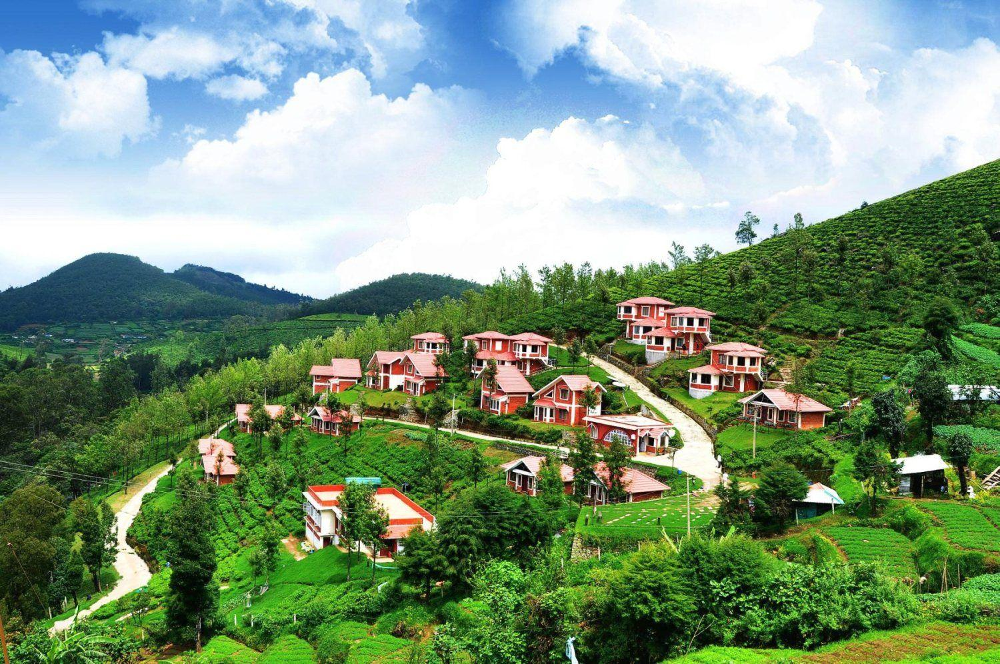

Say Hi to OOTY
Photography studio

Nestled in the verdant hills, the town of Ooty presents a picturesque panorama with its myriad houses scattered across the undulating landscape. The sight is a harmonious blend of human habitation and natural beauty, where charming cottages and modern homes stand amidst lush greenery. The hills, cloaked in mist and adorned with terraced gardens, create a serene backdrop that enhances the town's tranquil ambiance. The vibrant colors of the houses contrast beautifully with the emerald foliage, making Ooty a visual delight. This scenic tableau not only exemplifies the architectural charm and cultural richness of the region but also offers a peaceful retreat from the hustle and bustle of urban life.
Queen of Hill Stations

Ooty, officially known as
Udhagamandalam, is renowned for its breathtaking
scenic beauty, making it a beloved destination in southern India.
Nestled in the Nilgiri Hills, Ooty is surrounded by verdant
landscapes, lush tea gardens, and dense forests that provide a
refreshing escape from the plains. The town is adorned with rolling
hills, dotted with colorful colonial-era bungalows and modern homes,
creating a picturesque setting.
The tranquil Ooty Lake, surrounded by eucalyptus trees, offers serene
boating experiences, while the sprawling Botanical Gardens showcase a
diverse collection of exotic plants and vibrant flower beds. The
terraced gardens, winding roads, and panoramic viewpoints like
Doddabetta Peak provide stunning vistas of the valleys and hills.
During the blooming season, the hillsides are carpeted with
wildflowers, adding to the area's natural splendor.
The cool, misty climate enhances the ethereal charm of Ooty, often
enveloping the hills in a gentle fog that adds a touch of mystique.
The tea plantations, with their neatly trimmed bushes, stretch as far
as the eye can see, creating a soothing green expanse. Ooty's scenic
beauty, characterized by its harmonious blend of natural and man-made
elements, offers a serene and captivating experience for visitors,
making it a quintessential hill station retreat.